Instrumentación
Actuadores mecánicos: dar forma al movimiento
Cómo transmitir giro, obtener desplazamientos y adaptar fuerzas para que una acción de control llegue al proceso.
Entre la orden de un controlador y la acción sobre un proceso suele existir una cadena de elementos mecánicos que adapta el movimiento disponible a la tarea. Engranes, bandas, cremalleras, husillos, levas y mecanismos articulados permiten modificar velocidades, transmitir fuerzas y generar trayectorias. Su elección también influye en la calidad de la instrumentación, porque las holguras, la fricción y las deformaciones pueden separar la posición medida en un motor de la posición real de la carga. Revisaremos las funciones básicas de estos mecanismos, sus relaciones cinemáticas y sus aplicaciones, acompañadas de ilustraciones y animaciones interactivas para observar cómo trabajan.
Del controlador a la acción física
Regular la apertura de una válvula, orientar un sensor o desplazar una muestra bajo una cámara exige algo más que calcular una señal de mando. Esa señal debe producir un movimiento con el recorrido, la velocidad y la fuerza adecuados. Un motor puede girar rápidamente y, aun así, necesitar una transmisión para mover con lentitud y suficiente empuje el elemento que actúa sobre el proceso.
Un actuador convierte energía en una acción física. En un accionamiento electromecánico, el motor realiza la conversión de energía eléctrica a mecánica y el mecanismo adapta ese movimiento a la carga. Por extensión, se habla de actuación mecánica para estudiar el conjunto de transmisiones, articulaciones y elementos de guiado que conduce la acción hasta su destino.
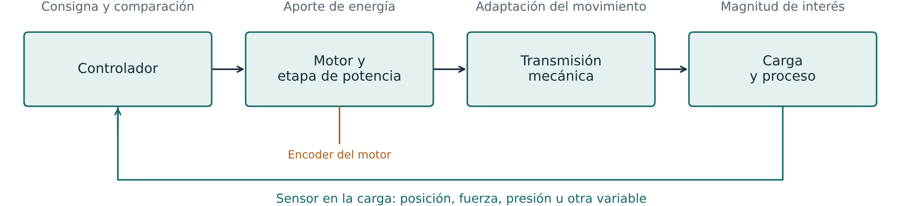
La instrumentación cierra esta cadena mediante sensores. Un encoder puede medir el giro del motor, una regla lineal el desplazamiento de una mesa y una celda de carga la fuerza aplicada a una probeta. Elegir dónde medir requiere comprender qué transforma el mecanismo y qué desviaciones puede introducir entre la entrada y la salida.
Qué puede transformar un mecanismo
Los movimientos elementales de un cuerpo rígido son la traslación, que cambia su posición, y la rotación, que cambia su orientación. Un mecanismo combina piezas resistentes, llamadas eslabones, mediante uniones que permiten ciertos movimientos y restringen otros. Una unión de giro permite rotación relativa; una corredera guiada permite desplazamiento a lo largo de una dirección.
El número de variables independientes necesarias para describir una configuración se denomina grados de libertad. Un cuerpo libre en el espacio tiene seis, mientras una mesa ideal guiada sobre un eje tiene uno. En muchos mecanismos, una sola entrada determina la posición de todas las demás piezas dentro de una rama de movimiento. Las guías y los apoyos deben eliminar los movimientos indeseados sin provocar desalineaciones o esfuerzos internos por restricciones incompatibles.
Estudiar la geometría del movimiento sin considerar sus causas es hacer cinemática. Para dimensionar una transmisión también se necesitan las fuerzas, la inercia, la resistencia de los materiales y la vida útil. Una animación ayuda a comprender cómo se mueve un conjunto; sus dimensiones y cargas admisibles necesitan un análisis adicional.
Velocidad y fuerza se intercambian mediante el trabajo
Una palanca permite obtener más fuerza a cambio de un recorrido menor. Una reducción por engranes aplica el mismo principio al giro, entregando más par a una velocidad menor. El par $\tau$ es el efecto de una fuerza que tiende a hacer girar un cuerpo. La potencia mecánica instantánea se expresa como
donde $\omega$ es la velocidad angular, $F$ la fuerza en la dirección del movimiento y $v$ la velocidad lineal. En unidades SI se utilizan $\mathrm{N\,m}$, $\mathrm{rad/s}$, $\mathrm{N}$ y $\mathrm{m/s}$, respectivamente, para obtener potencia en watts.
Definamos la relación de reducción por magnitudes como $i=|\omega_{\mathrm{entrada}}|/|\omega_{\mathrm{salida}}|$. Si $i>1$, la salida gira más lentamente. En un régimen donde la energía almacenada en el mecanismo no cambia apreciablemente,
La eficiencia $\eta$ considera las pérdidas por fricción y otros efectos disipativos. Durante una aceleración, parte del par también se dedica a cambiar la velocidad de las masas y de los ejes. La reducción adapta la potencia disponible, pero no la multiplica.
Transmitir giro entre dos ejes
Engranes y trenes de engranes
Los engranes transmiten movimiento mediante dientes que mantienen una relación geométrica entre sus giros. En dos engranes exteriores de ejes paralelos, los sentidos son opuestos y las velocidades cumplen
donde $z_1$ y $z_2$ son los números de dientes de entrada y salida. Un piñón de 20 dientes que mueve una rueda de 40 produce una reducción de dos a uno. Si la entrada gira a 60 rpm, la salida gira a 30 rpm en sentido contrario. Para que el contacto funcione, los dientes deben tener geometrías compatibles; en engranes cilíndricos esto incluye el módulo y el ángulo de presión.
Un tren compuesto combina varias etapas y su relación total es el producto de las reducciones de cada etapa. Un engrane intermedio en un tren simple puede cambiar el sentido o permitir una separación distinta entre ejes sin modificar la magnitud de la relación final. Los engranes cónicos permiten transmitir giro entre ejes que se intersectan, frecuentemente a 90°; los helicoidales ofrecen un contacto más progresivo, aunque pueden generar empuje axial.
Exploración interactiva. En la animación de engranes, cambia los dientes de la rueda de salida y observa su velocidad. Las referencias primitivas permiten relacionar la geometría con el contacto entre ambos engranes.
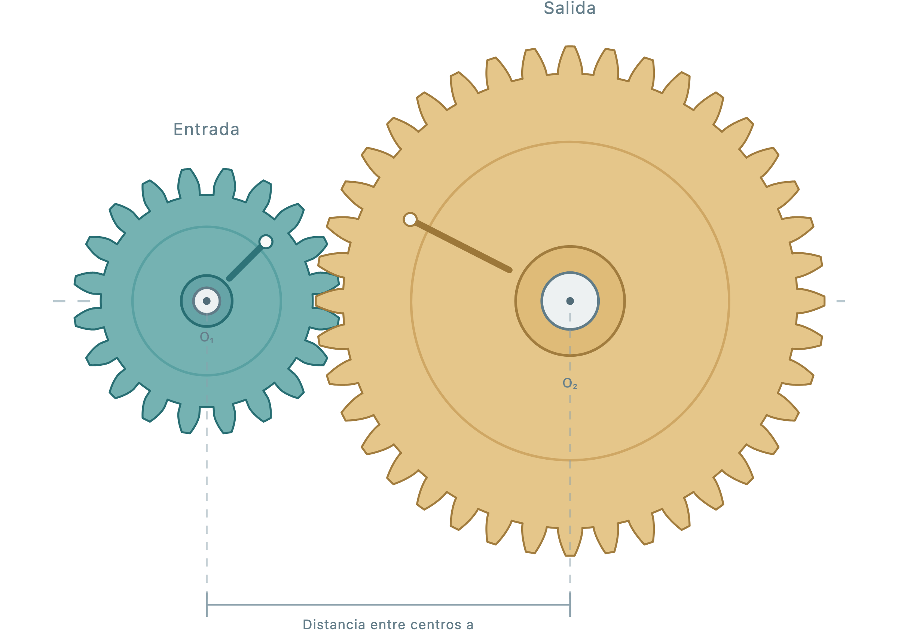
Bandas y cadenas
Cuando los ejes están separados, una banda puede transmitir giro mediante poleas. Sin deslizamiento, la velocidad de la banda coincide con la velocidad tangencial de cada polea,
Una banda abierta hace girar ambas poleas en el mismo sentido, mientras una disposición cruzada adecuada invierte el sentido. Las bandas planas y trapezoidales transmiten fuerza por fricción; las dentadas utilizan acoplamiento entre dientes y son apropiadas para conservar la sincronización. Aun una banda dentada tiene elasticidad, y su tensión y su montaje influyen en la posición de salida.
La diferencia entre la tensión del ramal más cargado $T_1$ y la del menos cargado $T_2$ produce un par de magnitud $\tau=(T_1-T_2)r$ sobre una polea de radio $r$. Las cadenas también transmiten movimiento entre ejes separados, pero mediante eslabones que engranan con ruedas dentadas. Admiten cargas importantes y evitan el deslizamiento por fricción; requieren atender lubricación, desgaste y variaciones de velocidad asociadas al paso de los eslabones.
Exploración interactiva. La animación de transmisión por banda permite modificar los diámetros y comparar las disposiciones abierta y cruzada. Su relación ideal supone ausencia de deslizamiento.
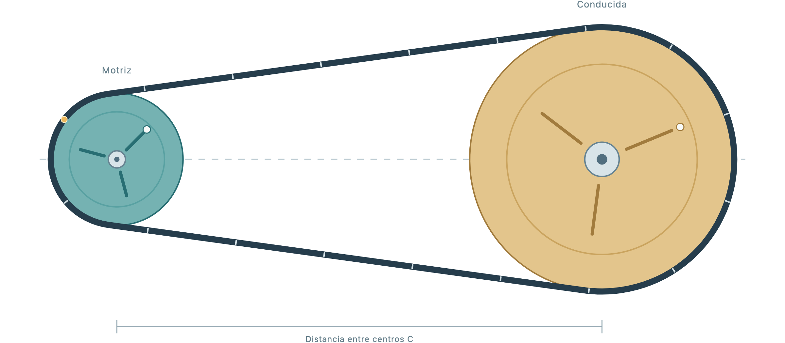
Tornillo sin fin y corona
El tornillo sin fin transmite giro a una corona mediante una superficie helicoidal. Sus ejes suelen ser perpendiculares y no se intersectan. Permite obtener reducciones elevadas en una etapa, por lo que resulta útil en orientadores, ajustes y mecanismos de baja velocidad.
Aquí $z_c$ es el número de dientes de la corona y $n_e$ el número de entradas o hélices independientes del tornillo. Una corona de 40 dientes con un tornillo de dos entradas produce $i=20$. El contacto tiene un componente importante de deslizamiento, que influye en la eficiencia y el calentamiento.
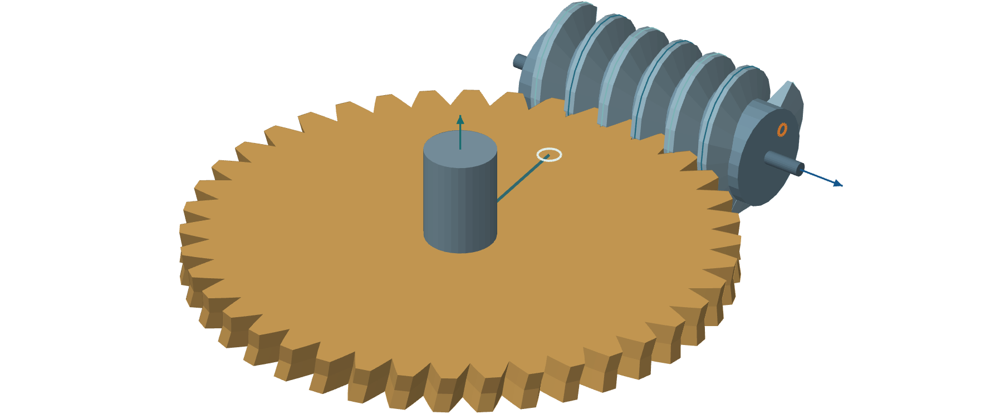
Algunos conjuntos dificultan o impiden que la corona haga girar al tornillo, propiedad denominada autobloqueo. Su existencia depende de la geometría y de la fricción; no debe suponerse para cualquier tornillo sin fin. Si la función exige retener una carga, la capacidad de retención se verifica para el conjunto real y, cuando corresponde, se utiliza un freno.
Exploración interactiva. En la animación del tornillo sin fin y corona, compara una y dos entradas con el mismo número de dientes de la corona. La mano de la hélice y la orientación de los ejes determinan el sentido de transmisión.
Convertir una rotación en desplazamiento lineal
Piñón y cremallera
Una cremallera es una pieza dentada recta que engrana con un piñón. Al girar este, desplaza la cremallera, como ocurre en un eje de posicionamiento o en ciertos sistemas de dirección. Con radio primitivo $r_p$, el modelo ideal cumple
El ángulo se expresa en radianes y el sentido positivo se escoge de acuerdo con el montaje. Las relaciones anteriores describen magnitudes compatibles con la misma dirección de transmisión. Un piñón más pequeño entrega más fuerza para el mismo par, pero recorre menos distancia por vuelta.
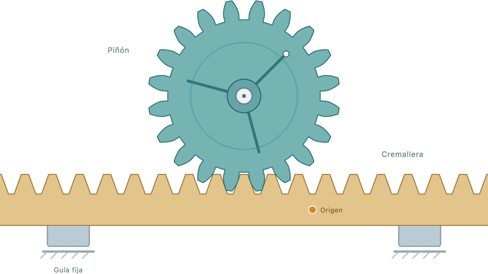
Exploración interactiva. La animación de piñón y cremallera relaciona el giro acumulado con el desplazamiento. Al cambiar el módulo o los dientes del piñón cambia su radio primitivo y, con él, la distancia recorrida por revolución.
Husillo y tuerca
Un husillo o tornillo de avance convierte el giro relativo entre una rosca y una tuerca en desplazamiento axial. En una disposición habitual, el husillo gira sin trasladarse y la tuerca, unida al carro, avanza sin girar. Una guía independiente evita la rotación del carro.
El paso $p$ es la separación axial entre crestas consecutivas de la rosca, mientras el avance $L$ es la distancia recorrida por revolución. Para una rosca de $n_e$ entradas,
Solo en una rosca de una entrada coinciden paso y avance. Si $p=4$ mm y hay dos entradas, la tuerca avanza 8 mm por revolución. El sentido depende de la mano de la rosca, de qué elemento gira y del convenio de ejes.
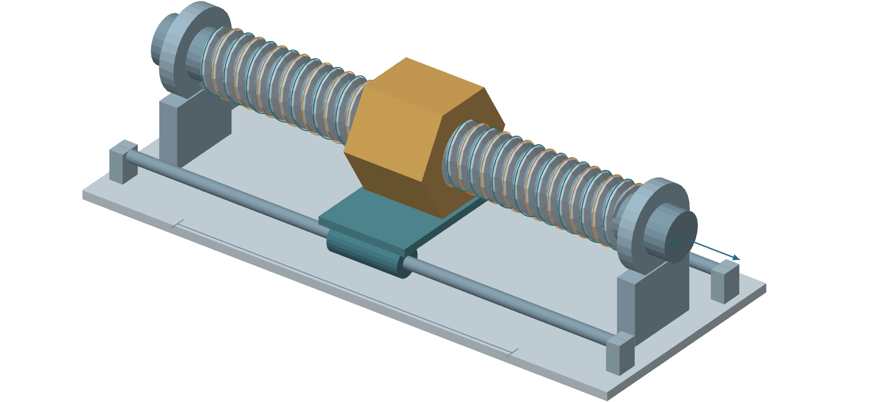
Despreciando la aceleración del conjunto, una estimación del empuje a partir del par aplicado al husillo es
Un avance pequeño favorece el empuje y la resolución geométrica, pero exige más revoluciones para completar el recorrido. Los husillos de contacto deslizante pueden tener fricción apreciable; los de bolas recirculantes reducen esa fricción mediante elementos rodantes. La eficiencia, la holgura y la facilidad de retroceso dependen de la construcción. Ni la ausencia de juego ni el autobloqueo se deducen del nombre del mecanismo.
Exploración interactiva. En la animación de husillo y tuerca, conserva el paso y aumenta las entradas. Comprueba que crece el desplazamiento por vuelta y disminuye el tiempo necesario para cubrir el mismo recorrido a igual velocidad de giro.
Producir movimientos cíclicos y trayectorias
En una dosificadora, una pinza o un equipo de ensayo no siempre interesa una relación constante entre entrada y salida. Puede necesitarse avanzar, permanecer en una posición y regresar, o convertir una rotación uniforme en una oscilación. La geometría del mecanismo permite establecer esas relaciones.
Leva y seguidor
Una leva es una pieza cuyo perfil impone el movimiento de un seguidor en contacto con ella. Su giro puede producir ascenso, reposo y descenso. Un rodillo en el seguidor reduce el deslizamiento local, y un resorte u otro sistema de cierre ayuda a mantener el contacto.
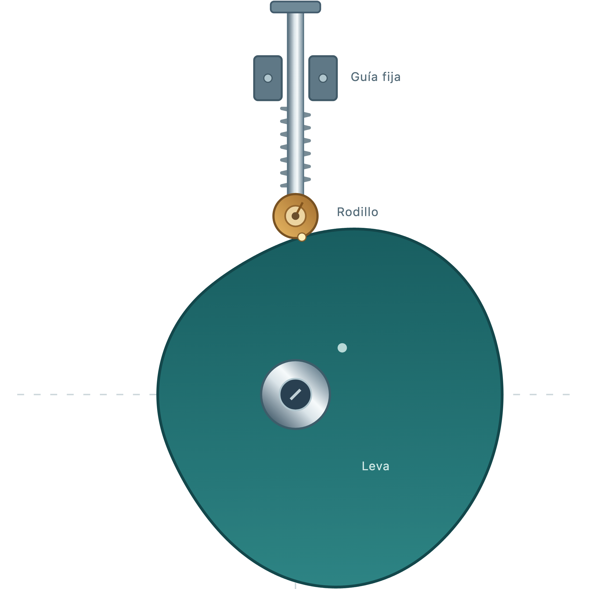
Si el desplazamiento es $s=s(\theta)$, su velocidad depende tanto de la forma de la curva como de la velocidad de giro,
donde $\alpha=\mathrm{d}\omega/\mathrm{d}t$ es la aceleración angular. Por ello, un perfil con cambios bruscos de pendiente puede exigir aceleraciones grandes y elevar las fuerzas de contacto. Las leyes de movimiento se escogen considerando también la suavidad de sus derivadas.
Una ley polinómica 3–4–5 para subir una altura $h$ durante un ángulo $\beta$ es
La variable $u$ representa la fracción del ascenso completada. El desplazamiento pasa de cero a $h$ con velocidad y aceleración nulas en los extremos si el giro es uniforme. El ciclo completo puede incorporar reposos y una ley de retorno.
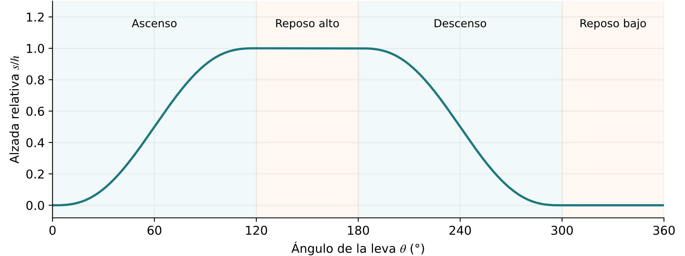
Exploración interactiva. La animación de leva y seguidor permite cambiar la alzada, los intervalos del ciclo y la ley de movimiento. En sus gráficas se puede comparar cómo estas decisiones modifican desplazamiento, velocidad y aceleración.
Mecanismos de barras articuladas
Una cadena de cuatro barras contiene cuatro eslabones unidos mediante articulaciones de giro. Uno de ellos es el bastidor fijo; los otros pueden formar una manivela, un acoplador y un balancín. Según las longitudes y el eslabón fijado, se obtienen giros completos, oscilaciones o trayectorias útiles para abrir una pinza y orientar una herramienta.
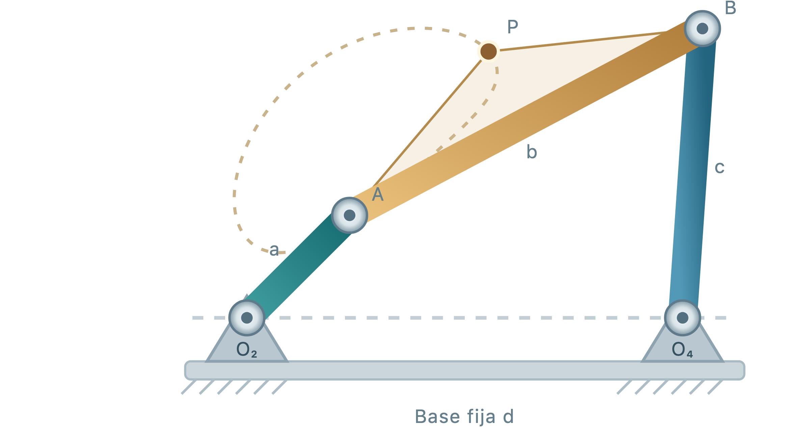
La condición de Grashof ayuda a clasificar la movilidad de un cuadrilátero articulado. Si $s$ y $l$ son las longitudes menor y mayor, y $p$ y $q$ las restantes,
En un cuadrilátero ensamblable, la desigualdad estricta permite configuraciones con una rotación relativa completa; el eslabón fijado determina el tipo de mecanismo que se obtiene. El caso de igualdad presenta posiciones de alineación especiales. Cerca de una alineación, la transmisión de fuerza y movimiento puede cambiar de manera muy pronunciada, por lo que no basta con comprobar que el dibujo cierre.
Exploración interactiva. En la animación de cuatro barras, compara los montajes disponibles y modifica las longitudes. El punto del acoplador permite observar cómo una entrada angular genera una trayectoria más elaborada.
Biela–manivela y yugo escocés
La biela–manivela–corredera convierte giro en movimiento rectilíneo alternativo, o realiza la conversión inversa, como ocurre en un motor de pistón. Para una corredera alineada con el centro de giro, radio de manivela $r$, longitud de biela $\ell>r$ y la rama de montaje mostrada, su posición medida desde el eje de la manivela es
La carrera entre los extremos es $2r$, pero la evolución dentro de la carrera depende de $\ell/r$. En general, el movimiento no es una sinusoide exacta. Esta diferencia importa en bombas de pistón y ensayos donde se necesita relacionar desplazamiento, velocidad y fuerza durante el ciclo.
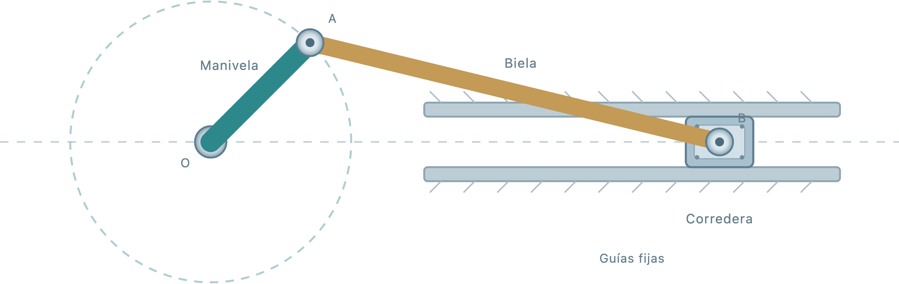
En el yugo escocés, un pasador de la manivela desliza en una ranura transversal y desplaza un carro guiado. Si el origen está en el centro de su carrera,
Con giro uniforme, el desplazamiento es armónico simple y también tiene carrera $2r$. La simplicidad cinemática se acompaña de contacto deslizante en la ranura, que influye en la fricción y el desgaste.
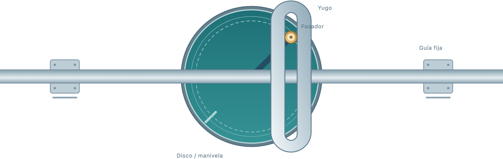
Exploración interactiva. En el yugo escocés, observa la proyección del pasador y su relación con la posición del carro. Después, en la biela–manivela–corredera, cambia $\ell/r$ y compara las gráficas de velocidad. Las dos animaciones permiten examinar el movimiento por fases.
Otros arreglos articulados generan retorno rápido, con tiempos distintos para el avance útil y el regreso aun cuando la entrada gira uniformemente. Esto puede aprovecharse para mover una herramienta lentamente durante el trabajo y regresarla con rapidez. El efecto procede de la geometría particular y no es una propiedad de todo mecanismo alternativo.
Guiar, acoplar y retener también forman parte de la actuación
Una transmisión necesita apoyos que mantengan la posición de sus ejes y guías que sostengan las cargas. Los cojinetes de deslizamiento utilizan superficies de contacto con materiales y lubricación adecuados; los rodamientos interponen bolas o rodillos. Debe distinguirse la carga radial, perpendicular al eje, de la axial, dirigida a lo largo de él. La selección del apoyo depende de ambas, de la velocidad, la rigidez y el entorno.
Los acoplamientos unen ejes y transmiten par. Algunos admiten pequeñas desalineaciones, pero su flexibilidad torsional también puede introducir una diferencia angular bajo carga. Una guía o un rodamiento no aporta por sí mismo energía de accionamiento; hace posible que el movimiento ocurra en la dirección prevista.
La rueda dentada con trinquete permite avanzar en un sentido y bloquear el contrario. Puede servir para retener una posición o producir avances por pasos. Su funcionamiento discreto resulta útil para indexar, aunque no equivale a una regulación continua de posición. En un sistema instrumentado, los finales de carrera y los sensores de referencia complementan estas funciones mecánicas.
Por qué la mecánica afecta a la medición
El controlador puede conocer exactamente cuántas cuentas registró un encoder y aun así desconocer la posición real del extremo de trabajo. Al invertir el giro, la holgura puede consumir una parte del movimiento antes de que la carga responda. Bajo fuerza, los eslabones y las transmisiones se deforman; en una aproximación elástica lineal,
donde $k_{\mathrm{eq}}$ es la rigidez equivalente en la dirección de interés. La fricción puede impedir pequeños desplazamientos y producir movimientos a saltos. La temperatura modifica dimensiones, y el desgaste puede cambiar con el uso una calibración inicialmente correcta.
La resolución es el incremento distinguible por la medición o por el mando. La repetibilidad describe la dispersión al volver a una misma posición bajo condiciones equivalentes. La exactitud expresa la proximidad al valor de referencia. Una resolución pequeña no garantiza por sí sola buena repetibilidad ni buena exactitud de posicionamiento.
Un eje de posicionamiento como ejemplo
Supongamos que una mesa para orientar una muestra debe desplazarse a 12 mm/s mientras vence una fuerza resistente de 120 N. Elegimos un husillo con avance $L=4$ mm por revolución y suponemos una eficiencia de trabajo de $\eta_h=0.40$. Para movimiento uniforme,
En el cálculo del par se convirtió $L$ a metros. Si un reductor de relación $i=5$ y eficiencia $\eta_g=0.90$ conecta el motor al husillo, el punto de trabajo aproximado del motor es
Estos valores corresponden al régimen uniforme del ejemplo. La selección final añade las exigencias de aceleración, fricción adicional, capacidad térmica y cargas de servicio. El punto de trabajo debe estar dentro de las capacidades del motor y de la transmisión.
Con un encoder que entrega $N=1000$ cuentas efectivas por revolución del motor, la relación geométrica proporciona
Las cuentas efectivas ya incluyen el modo de lectura del encoder. El resultado expresa la distancia ideal asociada a una cuenta, no una garantía de exactitud de 0.8 µm. Si el husillo tiene juego o la estructura se deforma, la mesa puede desviarse mucho más. Una regla lineal en la carga permite observar errores que el encoder del motor no distingue.
Elegir el mecanismo desde la tarea
El diseño comienza con el movimiento que necesita el proceso, las fuerzas que debe transmitir y la variable que realmente interesa medir. Un eje largo y rápido puede favorecer una banda; un ajuste lineal con empuje elevado, un husillo; un ciclo repetitivo con reposos, una leva. Las barras articuladas permiten resolver trayectorias cuando la geometría forma parte de la función.
Después se revisan recorrido, velocidad, aceleración, carga, rigidez, holgura, vida útil y mantenimiento, junto con la ubicación de los sensores. La elección resulta más sólida cuando la transmisión y la instrumentación se estudian como partes del mismo sistema. La mecánica determina cómo llega la acción al proceso; la medición permite comprobar que esa acción se produjo como se esperaba.
Referencias
- Bolton, W. (2017). Mecatrónica: Sistemas de control electrónico en la ingeniería mecánica y eléctrica. Un enfoque multidisciplinario (6.ª ed., cap. 8, «Sistemas de actuación mecánica», pp. 188–206). Alfaomega. Información editorial y vista previa.
- Santos-Ruiz, I. (2025). Animaciones interactivas. Los nueve mecanismos enlazados en el texto permiten modificar parámetros y consultar gráficas de su movimiento.
- Kohara Gear Industry Co., Ltd. (2021). KHK technical data. KHK Gears.
- Thomson Industries, Inc. (2026). Customizing lead screws for performance, compactness, cost and compliance.